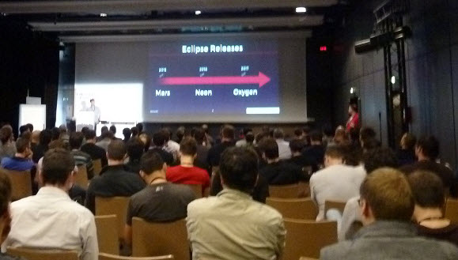
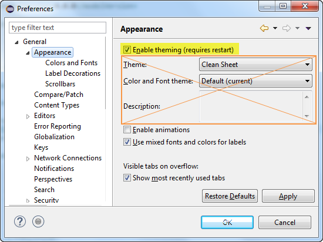
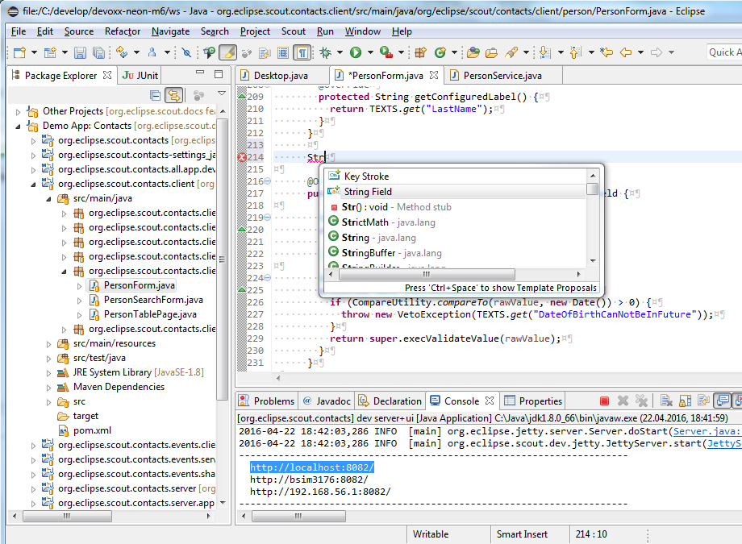

24 April 2016
At Devoxx France 2016, Mikaël Barbero gave a great talk about the Eclipse IDE. The talks was well attended (the room was almost full). This is the proof that there is still a lot of interest for the Eclipse IDE.

The talk was a great presentation of all improvements made to the IDE (already implemented with mars, coming with neon or oxygen). It was a big new and noteworthy, organized by main categories that matters to the users and not by eclipse projects. I really appreciated this approach.
If understand French, I recommend you to watch the video of the talk. In the other case, I am sure you will learn something by just looking at the slides.
Something I have learned: with Neon you can deactivate the theming (appearance section of the preferences) completely. In that case the CSS styling engine will be deactivated and your Eclipse IDE will have a really raw look. To disable the theming, just uncheck the checkbox highlighted in Figure 2

After a restart your Eclipse will look like this screenshot (Figure 3):

I hope the performances will be better, it particular when Eclipse IDE is used on distant virtualized environments like Citrix clients. If you want to test it now, download a Milestone release of Neon.